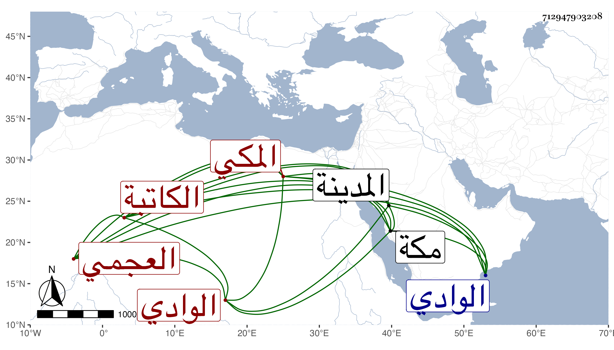

0902Sakhawi.DawLamic.ITO20230111-ara1.EIS1600.712947903208
Biography ID: 712947903208
729
كمالية ابنة العفيف عبد الله بن محمد بن علي العجمي المكي أم محمد الكاتبة أخت عائشة الماضية وخالة العز بن فهد واخوته أكثر إقامتها في الوادي ، أجاز لها ولأختها بانضمامها لأخويهما من غير إفصاح باسميهما خلق . وماتت في اثناء المحرم سنة ثمان وتسعين بمكة بعد تعلل مدة عند ابن اختها عن تحو الثمانين ، وكانت راغبة في الخير وبر الفقراء ممن زارت المدينة غيرة مرة رحمها الله .
